How much?
Enough?
A lifetime of inquiry, made teachable.


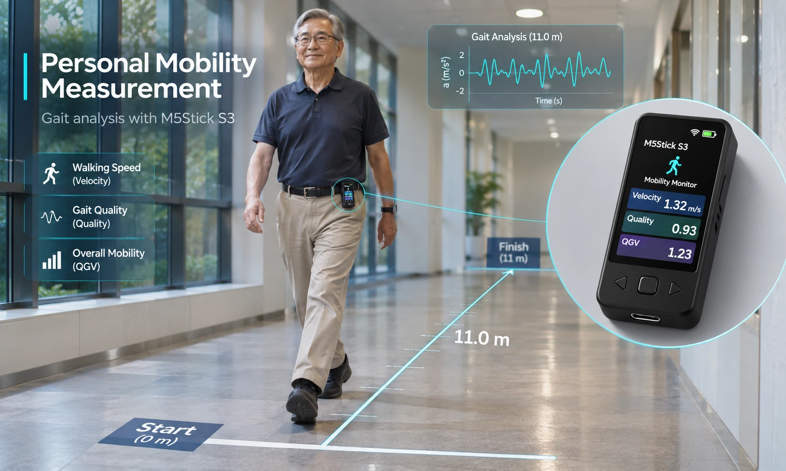

The Successor’s
Curriculum Handbook
Explore the science. Build the instruments. Test the evidence. Preserve the ideas.
Randall S. Young, Ed.S.
Curriculum and intellectual work · 28 November 2026 · v1.2
https://randosy.github.io/project-atlas/atlas/
For independent learners, teachers, builders and future stewards.
One method. Many journeys.
This is a guide to the original work, not a replacement for its manuals. Choose a route: an afternoon (sections 1–3); teacher (2–8); builder (7–11); researcher (10, 12, 14); steward (16).
Artwork sourced from the Project Atlas exhibition. Images include instructional illustrations, screenshots, apparatus imagery and experimental concepts; their presence does not establish hardware or clinical validation. For the PDP-8 image, see the source credit in section 10.
Terms: CORE 10 = the practical science and engineering curriculum that starts with something you can see, measure and investigate · CAP = Capture → Analyze → Publish · OCC = One Cup Chemistry · NIF = NOTHING IS FREE · SDL = Software-Defined Laboratory · FFT = Fair Fitness Testing (not Fast Fourier Transform) · C2G = Circuits to Genomes
Begin with the world
A guide for the reader, teacher and future steward

Project Atlas is the public intellectual estate of Randall S. Young, Ed.S., a STEM educator and physical-computing investigator. Its purpose is to preserve a way of working: ordinary reality becomes an experiment, an experiment creates evidence, and evidence enables a decision. The archive is not a collection of gadgets. It is an invitation to become an independent investigator.
What to do
- Spend 20 minutes exploring the exhibition. Choose one phenomenon that you can actually observe today.
- Start with the Singing Rule, Water Clock or Pop-Can Calorimeter. Use the browser model if hardware is unavailable; label simulated results as simulated.
- Keep a notebook or folder. Save a question, observation, units, graph and an explanation in your own words.
- Choose your route: teacher, learner, builder, researcher or steward. All routes share the same core method.
The method that holds it together
Experience before equation. Need before technology.
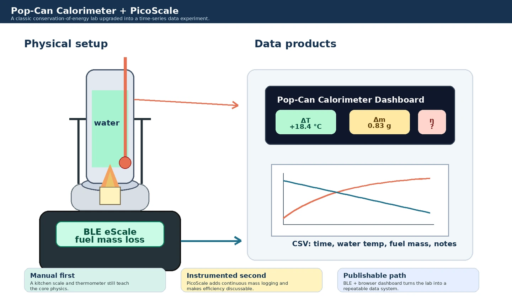

Begin with a phenomenon and a question, not a formula or device. Ask “How much?” to obtain a defensible measurement; ask “Enough?” to decide whether the result meets a purpose. CORE 10 owns the common language of inquiry. Its three sibling branches are Kitchen Inquiry Lab, One Cup Chemistry, and NOTHING IS FREE. Biology and SDL are cross-cutting threads; the Personal Energy Laboratory is a synthesis. Repeat a phenomenon only when the next encounter answers a different question.
What to do
- QUESTION: make a prediction; identify what could prove it wrong. DO: create or observe the physical event.
- MEASURE: record raw data, units, calibration, conditions and repeatability. MATH: graph first; use equations when they help explain the evidence.
- DISCOVER: compare prediction and observation; look for uncertainty, confounding and alternative explanations. KEEP: retain the dataset and write what was learned.
- CAP means Capture → Analyze → Publish. Publish a small, understandable result, including negative or inconclusive findings. Use AI to critique and extend, never to invent evidence; agreement between AI systems is not independent verification (see section 14, The Augmented Investigator).
Kitchen Inquiry Lab
Weeks 1–4 · The kitchen is a laboratory
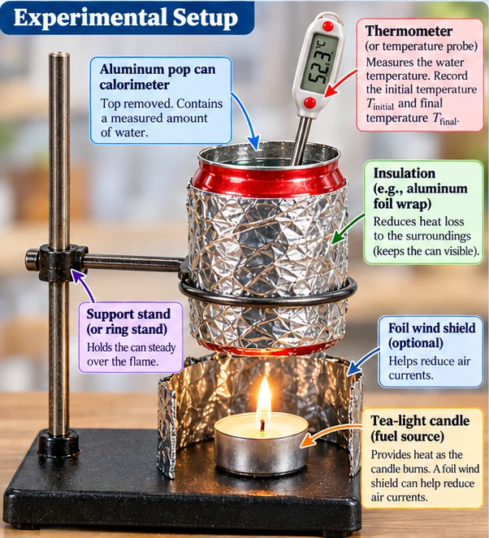

Seeing the unseen through measurement. A cup of water, kitchen scale, thermometer, timer and a properly rated plug-in power meter can support serious physical inquiry. Measurement quality comes first: distinguish repeatability from accuracy, tare from calibration, and power from energy.
What to do
- Week 1: weigh the same object repeatedly; tare a vessel, compare measured water mass with volume markings, and check the thermometer.
- Week 2: predict thermal mixing, then measure the result. Study Galileo’s Water Clock and use repeated trials to infer time from a proxy.
- Week 3: record a cooling curve; plot temperature above ambient versus time. Compare two safe container conditions and inspect residuals. Study the Singing Rule for another time/frequency relationship.
- Week 4: complete the canonical microwave water-heating investigation. Measure mass, initial/final temperature, elapsed time and electrical energy; estimate useful heat Q = mcΔT. Convert J → Wh → kWh → cost, distinguishing input from useful output. Use the Pop-Can Calorimeter exhibit as a model or supervised extension.
Open the original resources
Kitchen Inquiry canonical map · Microwave handoff · Water Clock · Singing Rule · Pop-Can CalorimeterOne Cup Chemistry
Weeks 5–7 · Matter, solutions and change

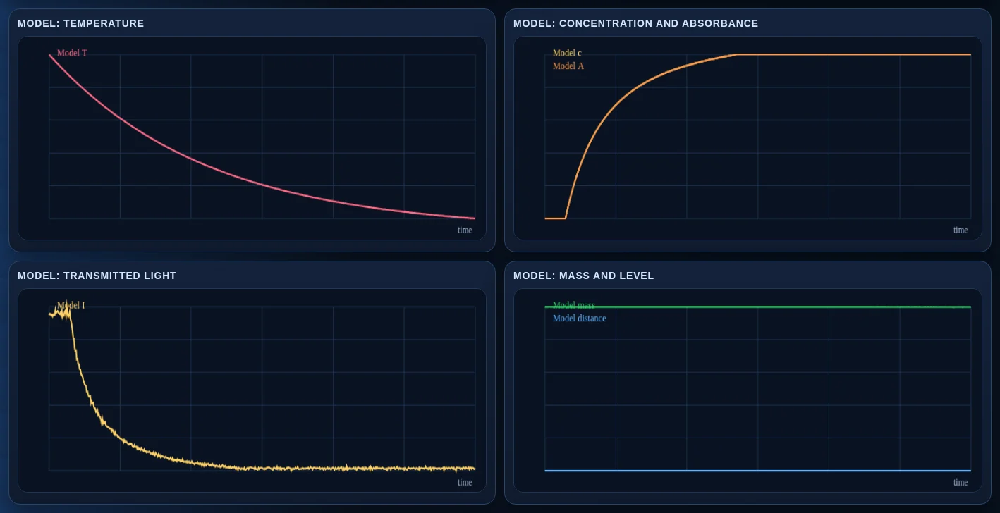
One vessel, a bounded quantity of material, inexpensive instruments and repeated observations. Use the original OCC-00 to OCC-19 teacher compendium and student materials. Each investigation should carry forward earlier measurements instead of re-teaching the same instrument. The following sequence follows the published experiment IDs.
What to do
- OCC-00 Measure Like a Chemist; 01 Water as the First Standard. Establish the apparatus, units and uncertainty.
- OCC-02 Newton Cooling; 03 Salt Changes the Curve; 04 The Heat-Capacity Trap; 05 Heat of Dissolution. Predict, observe and compare thermal histories.
- OCC-06 Grams Are Not Moles; 07 Conductivity Reveals Ions; 08 Freezing and Deicing. Connect mass and particle accounting to observable solution behavior.
- OCC-09 From Saturated Solution to Crystal; 10 Water Inside a Solid: Hydrates; 11 See the Lattice: Diffraction. Connect visible structure with a model of matter.
Chemistry becomes biology
Weeks 8–9 · From reactions to living molecules


The later chemistry investigations extend the measurement language to reactions, molecular scales, optical proxies and biological processes. TeaTime links light transmission to a calibrated concentration estimate. Catalase Open Lab links a measurable reaction to the research program on functional continuity.
What to do
- OCC-12 Acid and Base in the Cup; 13 Make a Solid from Two Clear Solutions; 14 Redox and Corrosion; 15 Rates and Catalysis. Distinguish observation, mechanism and rate.
- OCC-16 Light Becomes Concentration. Use TeaTime: blank, known standards, unknown, calibration and limits.
- OCC-17 Measuring a Molecule: Avogadro’s Number from a Soap Film (revised); 18 From Ice Melt to Living Molecules; 19 Can the Reasoner Find the Flaw? Challenge assumptions and reason from evidence.
- Catalase Open Lab: read the teacher and student guides; investigate oxygen-production rate under approved conditions, with freely vented apparatus, eye protection and instructor oversight. Compare independent calibration with the reaction measurement. Never seal a gas-generating reaction or use it as a breathing device.
NOTHING IS FREE
Weeks 10–11 · Personal Energy Laboratory
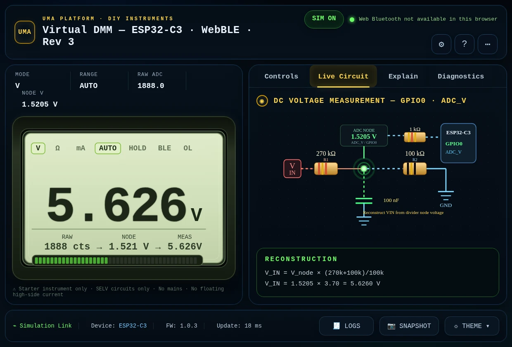

Make energy accountable across the system boundary. A watt is a rate; a watt-hour is accumulated energy. Every useful effect comes with an input, transfer, storage, conversion, unintended losses and a cost. The integrative question: how can viable human life be supported when energy is finite?
What to do
- Measure the energy used by a USB-powered device with a suitable meter. Compare charging input and usable discharge energy only with approved chargers and protected packs.
- Record solar generation or use a labeled sample dataset; compare daily generation with a load profile. Estimate reserve under an explicit uncertainty margin.
- Reuse the kitchen microwave record to compare thermal demand with battery capacity; do not duplicate the original physical experiment.
- Use the STC/NiMH robot energy mission or a safe equivalent: measure runtime and useful distance, estimate Wh per meter, and compare mission plans. Build a household energy budget with priorities, reserve and cost.
The measured world
Week 12 · Invent an instrument when you need one
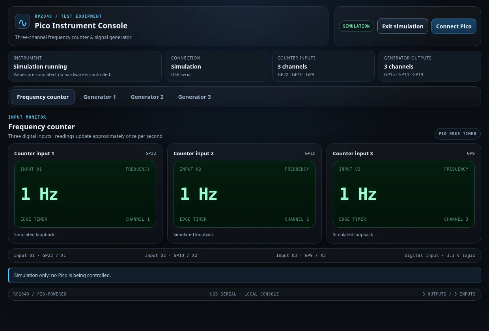

An instrument is a defensible connection between an observable signal and the quantity we want. The Measured World Lab groups temperature, mass, distance, motion, conductivity, color/light and timing/frequency devices. Learn what a device actually measures, its units, range, resolution and practical uncertainty.
What to do
- Try the virtual instruments before connecting hardware. Compare a digital value and the raw waveform or time series behind it.
- Study the Sphericity Meter: define what “round enough” means, compare candidate measurements and explain limitations.
- Build one useful low-cost instrument: DS18B20 thermometer, HX711 load cell, or time-of-flight distance sensor; use the actual board and electrical documentation.
- Calibrate with independent standards; repeat measurements; export CSV and inspect a graph. Reject invalid sensor readings explicitly.
Open the original resources
Virtual Instruments · Sphericity Meter · Measured World Lab · Singing RuleSoftware-Defined Laboratory
Weeks 13–14 · From sensor to browser to evidence
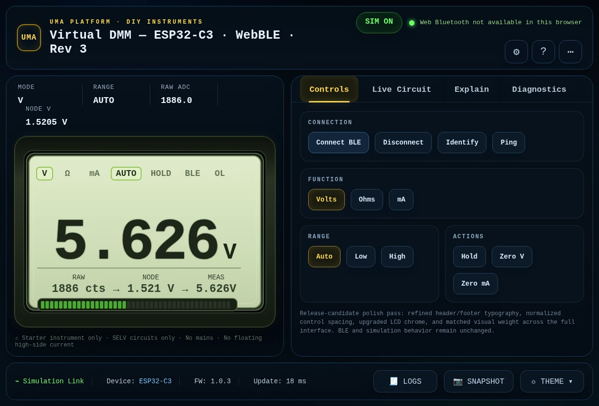

SDL separates inexpensive physical endpoints from reusable host intelligence. The scientific purpose drives the instrument choice. Human-readable messages, explicit errors, visible raw values and reusable dashboards make laboratory behavior inspectable. SUPER, MCP, virtual instruments and AI-assisted analysis are extensions, not prerequisites.
What to do
- Run the documented synthetic serial fixture first: DS18B20 → Uno/MFS → USB serial → Python bridge → CSV → plot. Keep the fixture label visible.
- Read the SDL Quickstart; reproduce the physical reference with safe wiring. Record actual device, firmware revision, calibration and data.
- Extend one previously completed CORE experiment with the same transport: serial, BLE UART or Wi-Fi only when needed.
- Compare endpoint responsibilities with PC-side analysis. Explore UNO Q Spirit, Pico W and micro:bit/ESP32 as optional tiers; verify voltage compatibility before connecting any shield.
Physical computing: bits to behavior
Weeks 15–17 · Make the mechanism visible
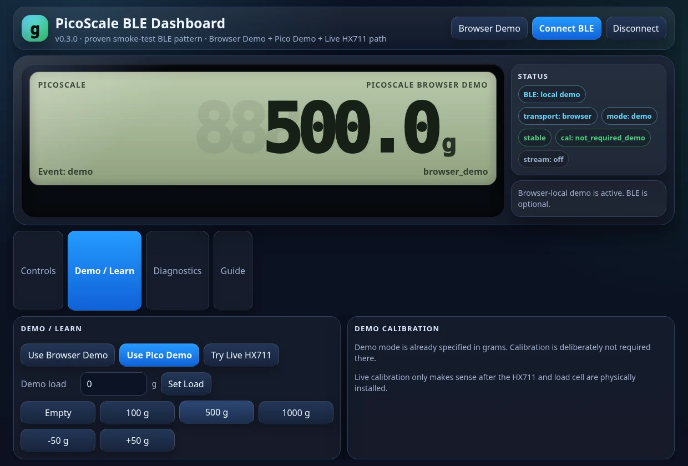
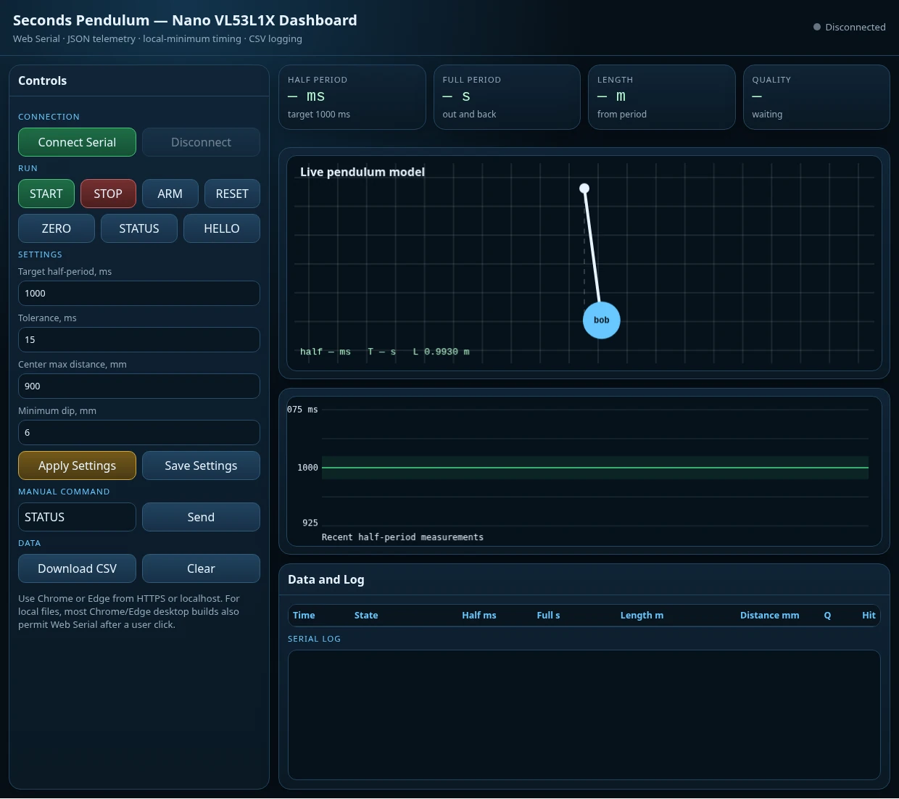
A progression from one-bit logic, switches, latches, clocks and reaction games to the Arduino Uno/MFS, micro:bit, ESP32/M5Stack, RP2040 and MSP430. Learn the reason behind the abstraction. Begin with visible behavior, name it, expand the macro to register operations, then transfer the concept to another machine.
What to do
- Week 15: model a latch or reaction timer; blink an LED, read a button and explain state. Try Arduino or micro:bit before choosing more demanding hardware.
- Week 16: MSP430G2553 labs 01 Blink, 02 Button, 03 Patterns, 04 Timer, 05 Interrupt, 06 PWM. Inspect bit masks and hardware timing; compare blocking and interrupt-driven designs.
- Week 17: labs 07 ADC, 08 UART TX, 09 UART RX, 10 Telemetry, 11 Tiny Multitasker. Explain how a sensor value becomes a message; inspect scheduling.
- Optional appendices: TMP36, HX711, HC-SR04, VL6180X. Read the teacher guide and board compatibility notes; protect 3.3 V GPIO from 5 V signals.
Computing observatories
Week 18 · History before abstraction


Historical machines reveal the complete computing system. Forth stacks, the 1802 and 65C02, LINC/PDP-12 laboratory computing and the PDP-8 expose state, instruction flow and the boundary between software and the physical world. ATLAS-8 is an educational engineering preview, not a cycle-accurate certified DEC system.
What to do
- Start with Before the Click and a visible stack or CPU simulator. Follow a value through registers, memory and instruction execution.
- Run ATLAS-8 v0.7 in PC simulation: Python 3, START_DASHBOARD_WINDOWS.bat or python3 pc_dashboard_server.py --mode sim --open. Use the URL printed by the server.
- Enter the five-word front-panel exercise; run a calculator program; explore instruction-driven paper tape. Explain octal notation, TAD and DCA.
- Try synthetic laboratory I/O, then optionally Pico/MicroPython plus MSP430 controller after hardware validation. LAB-12 links cooling experiments to historical instrumentation. Explore Forth, LINC/PDP-12 and AGC history as extensions, not as claims of complete emulation.

Bargain Bin Robotics
Week 19 · Substitute being clever for being rich
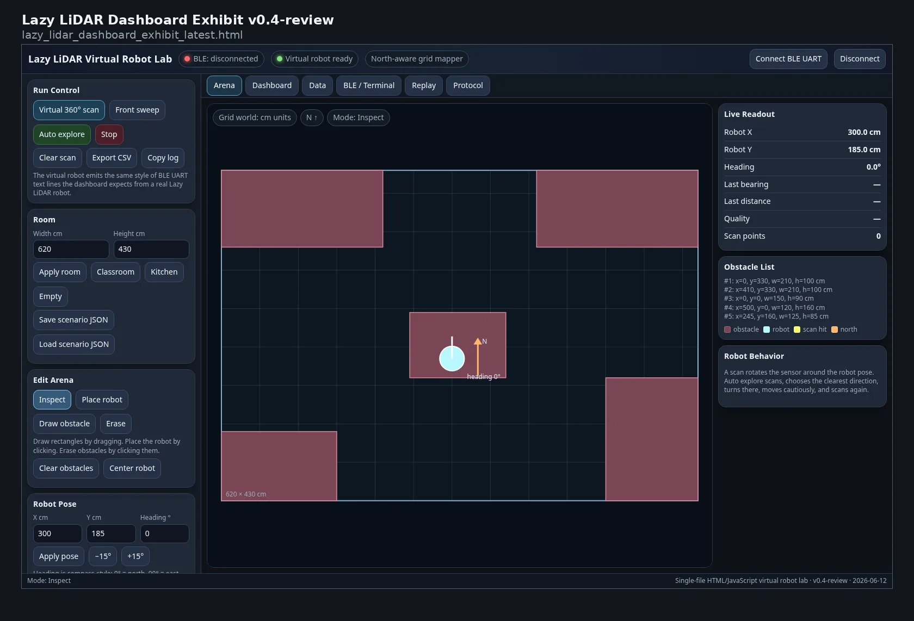
A robot is an instrument that acts. The enduring mission is more important than a particular board. Low-cost ranging, repeated observations, calibration and statistical inference can outperform careless use of expensive hardware. Robot_EDU activities connect the machine to physics and energy decisions.
What to do
- Open Lazy LiDAR and try its virtual lab. Predict how sparse range measurements change as the robot moves.
- Design a timed-drive mission in Cutebot Motion Evidence. Compare motor command, inertial evidence and tape-measured displacement. Repeat and characterize spread.
- Add an obstacle/navigation or mapping question. Explain how repeated observations reduce uncertainty without removing systematic bias.
- Reuse the NIF energy ledger: evaluate distance/coverage, runtime and energy for two mission strategies. Operate only in a clear, safe area.
Mathematics becomes necessary
Week 20 · Ten Problems That Teach Calculus
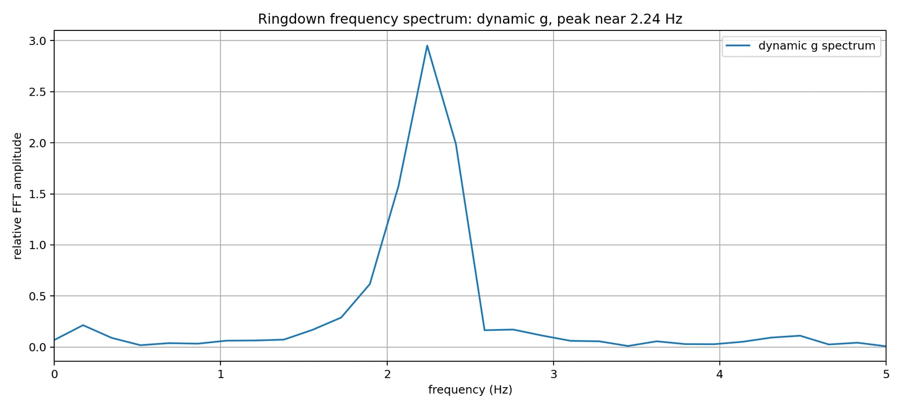

Do mathematics because an investigation needs it. The calculus exhibit complements CORE 10: change, rates, accumulation and models arise from meaningful problems. The historical CORE Twelve spine also adds probability, distributions, multiplicity, diffusion, entropy and open-system reasoning.
What to do
- Follow the Ten Problems That Teach Calculus link in the exhibition and work through the original problem sequence at your own pace. Start with a graph before formal notation.
- Reuse a cooling curve to estimate instantaneous slope and interpret its units. Compare finite differences at different intervals.
- Reuse a power-time record to estimate accumulated energy as area under the curve. Compare with the meter’s energy reading.
- Use repeated trials or dice to explore distributions. Discuss why a sample estimate varies and why a model is not the observation. Extend to entropy and open systems using the historical CORE Twelve spine.
Open the original resources
Calculus (separate website) · Exhibits · Historical CORE Twelve · CORE 10Measure human performance
Week 21 · Capacity, quality and transparent evidence

FFT (Fair Fitness Testing), SQM+ and Tone Trainer apply the same transparent measurement philosophy to movement. SQM+ Personal proposes a portable M5Stick S3 instrument plus browser dashboard. The first quantity is known distance divided by time; inertial measures add potentially useful quality evidence rather than replace the basic observation.
What to do
- Read the Hallway Observatory and SQM+ Personal exhibits. Use the provided sample record or a safe simulation; identify the known 11 m leg, explicit endpoints and excluded turns.
- Compute walking speed from distance and elapsed time; compare step candidates, cadence and consistency. Explain uncertainty in automatic step detection.
- Read FFT’s distinction between prescribed work, evidence of motion and observed physiological response. Tone Trainer and PlateLab extend the transparent feedback principle.
- For builders, inspect the M5Stick S3 release and five-pass acceptance protocol. Record battery, link state, raw IMU data and session conditions; compare automated steps against a manual count.
Open the original resources
SQM+ Personal · Hallway Observatory · Fair Fitness Testing · M5Stick S3 source · Human performance repoFrom Circuits to Genomes
Weeks 22–23 · A bridge to open research


Can function endure as implementation changes? The PDP-8 example motivates architectural economy; modern GPU architecture provides a complementary comparison. Biological research asks whether function can be retained through different implementations. Analogy generates questions, not proof. The public research portal now distinguishes the architectural study, peroxide-management research, Augmented Investigator and the earlier primate-enhancer companion.
What to do
- Read the C2G portal and Paper 1 architectural-economy materials (documented v11; the v12 review PDF is unverified). Compare an invariant instruction contract against changed hardware; distinguish H100 parallelism from PDP-8 compatibility.
- Read Paper 2 peroxide-management manuscript and protocol. Use Catalase Open Lab as an educational bridge; distinguish catalytic reaction measurements from biological-system claims.
- Review the primate-enhancer FEM companion: reporter assays, uncertainty, equivalence margins, grouped validation and the reported unsuccessful predictive pilot. A nonsignificant difference is not equivalence.
- Read The Augmented Investigator v0.6 (the review PDF is unverified): CAP, AI assistance, traceability and human responsibility. Follow the separate 24-session C2G curriculum for deeper study (8 weeks at three 25-minute sessions; no H100 purchase needed).
Open the original resources
C2G exhibition · C2G master curriculum · Publication status · Peroxide manuscript · Augmented Investigator · Catalase researchThe 24-week learning itinerary
A proposed schedule, not an original fixed syllabus
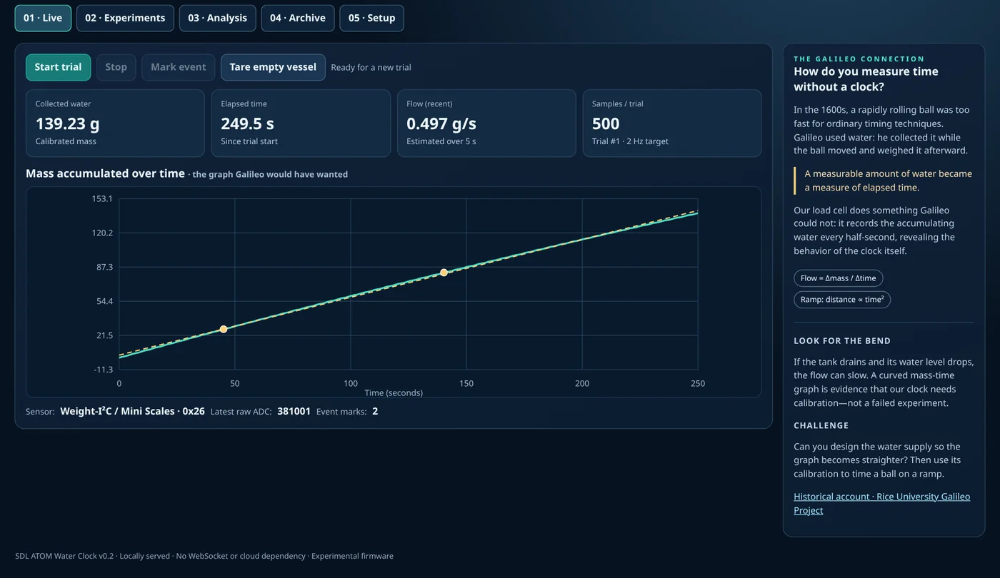

Work two or three sessions per week, 45–60 minutes each, with additional time for builds. No one must complete every project. Teachers can adapt selected modules; independent investigators may follow the entire route. Move on when you can explain the evidence, not simply when the calendar says so.
What to do
- Weeks 1–4: calibration/water standard; water clock and thermal mixing; cooling/Singing Rule; canonical microwave energy. KEEP: measurement notebook + graph + energy ledger.
- Weeks 5–9: OCC-00–11 in weeks 5–7; OCC-12–19, TeaTime and Catalase in weeks 8–9. Select representative experiments; finish all 20 in an expanded semester. KEEP: calibration and reaction report.
- Weeks 10–14: NIF storage/energy budget and robot energy; measured-world instrument; SDL fixture and physical reference. KEEP: reusable dataset and working data path.
- Weeks 15–20: bits and state; MSP430 labs 01–06; labs 07–11; observatories/ATLAS-8; robotics; calculus. KEEP: visible program trace, mission data and rate/accumulation explanation.
- Weeks 21–24: movement measurement; C2G architectural and catalase/genomic research; AI-assisted inquiry (section 14); final capstone and archive handoff. KEEP: one reproducible investigation and public or private portfolio.
Keep the ideas alive
Week 24 · The successor’s operational handbook
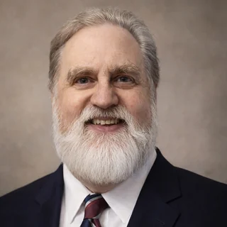
The estate is an idea backup, not just a file backup. Its future depends on people who can understand, reproduce, teach and extend it. A successor’s first job is to make one existing investigation work, not to add another platform. Keep the author’s rationale and original editions intact while documenting corrections and new evidence.
What to do
- Download the public repositories; keep a local mirror and a second independent copy. Preserve README, IDEAS, source, PDFs, assets, licenses, checksums, commit IDs and tested release instructions. Test restoration without the original website.
- For each project preserve: question, rationale, mechanism, distinctive contribution, materials, safety, procedure, raw data, analysis, limitations, exact version, reproducibility evidence and next action.
- Use explicit maturity labels: indexed, archived, published, software-tested, bench-tested, independently reproduced. Never silently promote one category to another. Preserve original binaries and identify missing material honestly.
- Respect authorship, upstream licenses and privacy. IAS is intentionally off-GitHub; do not publish its protected implementation. Do not upload credentials, private records or personal health data. Designate an authorized maintainer through GitHub’s actual account/organization mechanisms; do not share credentials.
- Once a year test the home page, downloads, one browser experiment and one local physical experiment; repair links, record results and archive a dated checkpoint. If Atlas disappears, begin at the repository map and this saved handbook.
Open the original resources
Project Atlas source · Idea preservation · Migration ledger · Works and Publications · Public preservation baselineProject Atlas · Return to opening page